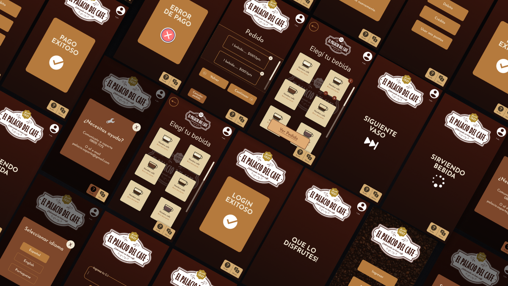
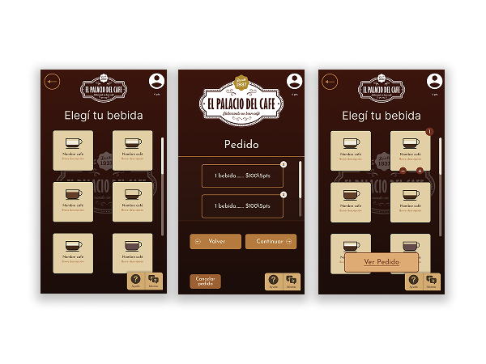
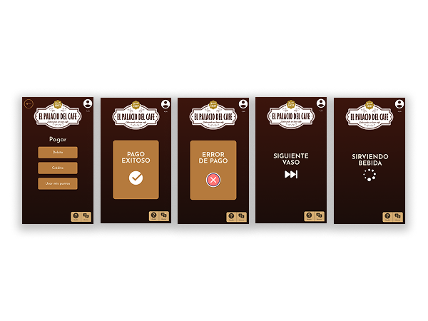
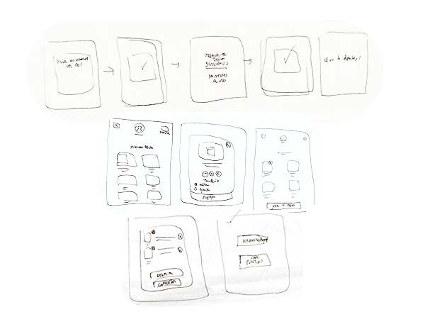
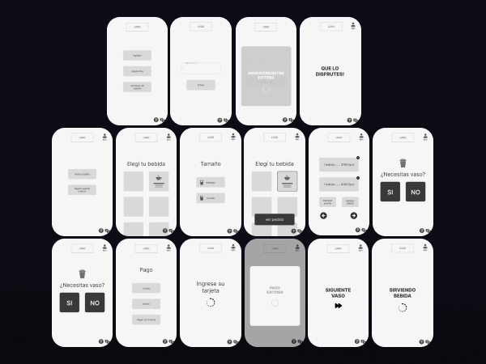
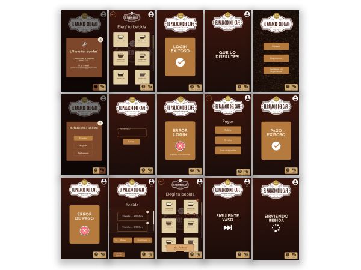

Un punto de venta sin punto de venta
El Palacio del Café necesitaba operar en espacios de alto tránsito — centros comerciales, ferias gastronómicas, entornos corporativos — donde instalar una caja tradicional no siempre es viable y cada minuto de espera tiene un costo real. El brief fue concreto: diseñar la experiencia completa de self-checkout para un tótem interactivo que permitiera comprar café de forma rápida, autónoma y exclusivamente con medios digitales.
Sin personal en el punto de venta. Sin efectivo. Sin fricción.

El hardware como punto de partida
El tótem no era un lienzo libre. Pantalla táctil en formato 3:4, POS integrado, dispensador automático: una superficie de interacción concreta y no negociable que definió cada decisión de layout desde el primer wireframe. Diseñar para ese hardware significaba descartar gestos complejos, columnas múltiples y cualquier patrón de interfaz que asumiera una pantalla diferente.
Las restricciones de presupuesto y mantenimiento sumaron otra capa: sin mecanismos físicos complejos, toda la inteligencia de la experiencia tenía que vivir en la pantalla. Eso no fue una limitación — fue el principio de diseño más importante del proyecto.


"En un sistema de self-checkout, cualquier paso innecesario no es un detalle de UX — es una barrera que ralentiza la fila y genera abandono."
— Principio de diseño · Totem Café



Simplificar sin perder claridad
La decisión más difícil fue organizar la jerarquía entre los cuatro momentos del flujo: selección, personalización, pago y retiro. En un contexto de alta demanda, la sobrecarga cognitiva no es teórica — ocurre cuando alguien está apurado, hay gente detrás esperando y la pantalla le presenta demasiadas decisiones a la vez.
La respuesta fue mantener el estado del pedido siempre visible y reducir las decisiones por pantalla al mínimo posible. Botones grandes, navegación estrictamente lineal, feedback constante en cada acción. El sistema tenía que generar confianza en sí mismo — porque no hay nadie al lado para resolverlo.
El caso completo — wireframes, decisiones de diseño, flujo interactivo y pantallas finales — está publicado en Behance. Ver case study completo →